Dokumentacja projektowa jest publicznie dostępna. Rozkładamy ją na czynniki pierwsze, żeby każdy mieszkaniec wiedział, co dokładnie ma powstać. Dodatkowo zamieszczamy też symulację ruchu ciężarowego po zmianach proponowanych w dokumentacji.
Nasze analizy
NoweSierpień 2026
Symulacja mijania pojazdów ciężarowych
Czy projektowana szerokość 6,00 m ulicy Żeromskiego pozwoli ciężarówkom bezpiecznie się minąć?
Jedno pytanie szczególnie często powtarzało się podczas naszych spotkań z Wami oraz w komentarzach pod publikowanymi materiałami:
Żeromskiego naprawdę zostanie zwężona do 6 metrów?
Nas również nurtuje to od chwili, gdy zaczęliśmy analizować projekt przebudowy. Jak zapewne zdążyliście nas poznać, lubimy opierać się na konkretnych, mierzalnych danych. Dlatego postanowiliśmy zaprosić do udziału dwóch wirtualnych kierowców wraz z ich zestawami - ciągnikami siodłowymi z naczepami.
Połączyliśmy nasze inżynierskie wykształcenie, doświadczenie za kierownicą oraz dostępne narzędzia, aby możliwie czytelnie pokazać, co może wydarzyć się podczas mijania dwóch ciężarówek na projektowanej jezdni. A żeby nie ograniczać się do statycznych rysunków, przygotowaliśmy interaktywną symulację.
W naszym scenariuszu kierowcy mają nerwy ze stali i konsekwentnie prowadzą pojazdy środkiem swoich pasów ruchu. Każdy pas ma dokładnie 3,00 m szerokości. Jaki jest efekt? Przekonajcie się sami, przesuwając suwak poniżej.
Nie twierdzimy, że każde spotkanie ciężarówek na tej drodze zakończy się tak jak w symulacji. Pokazuje ona jednak, jak niewielki może pozostać margines na błąd kierowcy, chwilę nieuwagi lub niewielkie odchylenie od środka pasa.
Symulacja obrazuje geometrię konkretnego scenariusza i nie zastępuje profesjonalnej analizy przejezdności. Pozwala jednak zobaczyć skalę dostępnej przestrzeni oraz miejsca, w których mogą pojawić się problemy.
Jak może wyglądać to w codziennym ruchu? Kierowcy, chcąc zwiększyć odstęp między pojazdami, prawdopodobnie będą odsuwać się od osi jezdni. W wielu przypadkach może to oznaczać najeżdżanie kołami na pobocze.
Publikacje branżowe dotyczące trwałości krawędzi nawierzchni wskazują, że regularne obciążanie poboczy przez ciężkie pojazdy może prowadzić do ich deformacji, powstawania kolein oraz stopniowego wykruszania i obłamywania krawędzi asfaltu. Z czasem może pojawić się różnica wysokości między jezdnią a poboczem, zwiększająca ryzyko utraty panowania nad pojazdem oraz uszkodzenia opon lub zawieszenia.
Dlatego zadajemy trzy konkretne pytania:
Czy na obecnym etapie inwestycji możliwe jest zwiększenie projektowanej szerokości jezdni - na całym przebudowywanym odcinku albo przynajmniej w miejscach najbardziej narażonych na problemy podczas mijania się ciężarówek?
Czy zamiast poboczy wykonanych wyłącznie z zagęszczonego kruszywa można zastosować asfaltowe opaski krawędziowe lub inne konstrukcyjne wzmocnienie odporne na regularne najeżdżanie przez ciężkie pojazdy?
Czy możliwe jest ograniczenie tranzytowego ruchu pojazdów ciężarowych, które nie obsługują posesji ani przedsiębiorstw zlokalizowanych przy ulicy Żeromskiego, lecz wykorzystują ją oraz centrum Otwocka jako trasę dojazdową do i z zakładów znajdujących się między innymi w Karczewie?
Nie przesądzamy odpowiedzi. Oczekujemy jednak, że przed rozpoczęciem przebudowy kwestie te zostaną rzetelnie przeanalizowane, a mieszkańcy otrzymają konkretne wyjaśnienia oparte na danych dotyczących natężenia i struktury ruchu oraz trwałości zaprojektowanych rozwiązań.
Pierwsza część projektu drogowego obejmuje odcinek ul Żeromskiego od numeru 76 do numeru 79A. Na rysunkach znajdziecie szczegółowy plan zmian w tej części ulicy, a ma ostatnim zdjęciu legendę wyjaśniającą, co oznaczają poszczególne kolory na mapie.
Zmiany w tym segmencie
Ciąg pieszo-rowerowy będzie miał szerokość 3 m
Ulica Żeromskiego zostanie zwężona do 6 m
Zostaną przebudowane zjazdy na drogi poprzeczne i posesje (zaznaczone niebieskim wypełnieniem na rysunkach)
Chodniki po stronie południowej zostaną uzupełnione/poprawione jedynie w ograniczonym zakresie
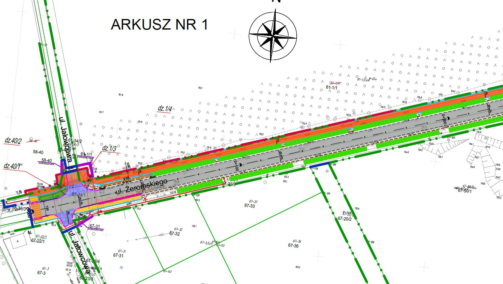
Rysunek 1 – plan sytuacyjny
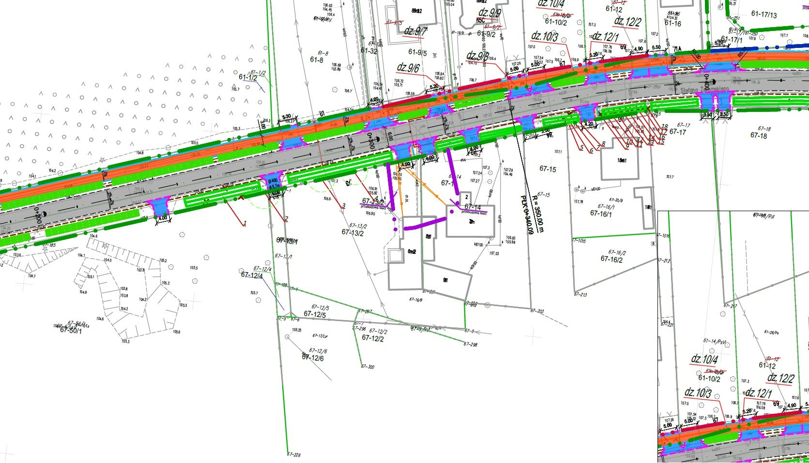
Rysunek 2 – plan sytuacyjny
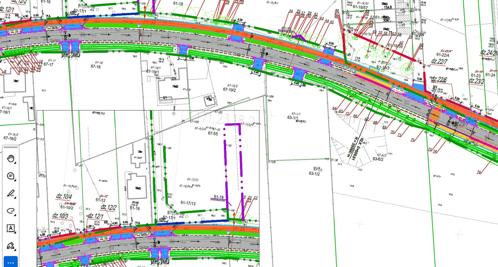
Rysunek 3 – plan sytuacyjny
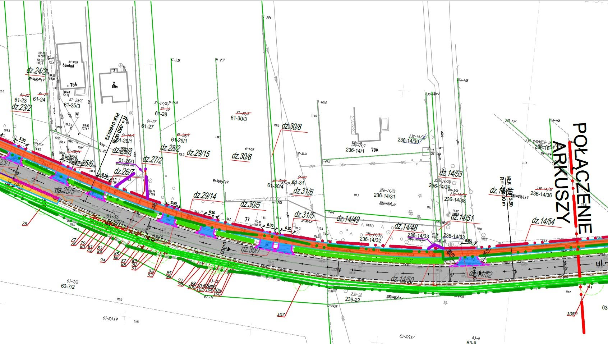
Rysunek 4 – plan sytuacyjny
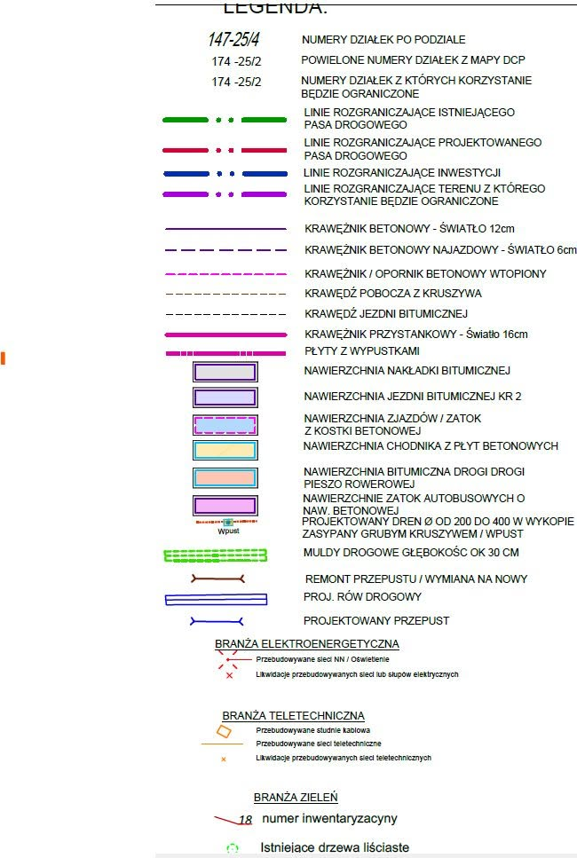
Legenda
Macie pytania? Zostawcie je w komentarzu, a my postaramy się uzyskać na nie odpowiedzi.
Druga część projektu drogowego obejmuje odcinek Żeromskiego od numeru 89 do numeru 131. Na rysunkach znajdziecie szczegółowy plan zmian w tej części ulicy.
Zmiany w tym segmencie
Sklep hydrauliczny zyska utwardzony parking tuż przy ulicy
Zapadnięte przejście dla pieszych przy numerach 98J/98H zostanie poprawione, zainstalowane zostanie doświetlenie
Poprawa odwodnienia - studzienki oraz przepusty na drugą stronę jezdni wpięte w nowy dren
Nowe przejście dla pieszych i rowerzystów na ul. Kosackiego
Nowa ścieżka (ciąg pieszo-rowerowy) o szerokości 3 m, przebudowane zjazdy, zwężenie ul. Żeromskiego do 6 m
Tak jak w poprzednich segmentach
Ciąg pieszo-rowerowy o szerokości 3 m
Ulica Żeromskiego zwężona do 6 m
Przebudowane zjazdy na drogi poprzeczne i posesje (zaznaczone niebieskim wypełnieniem)
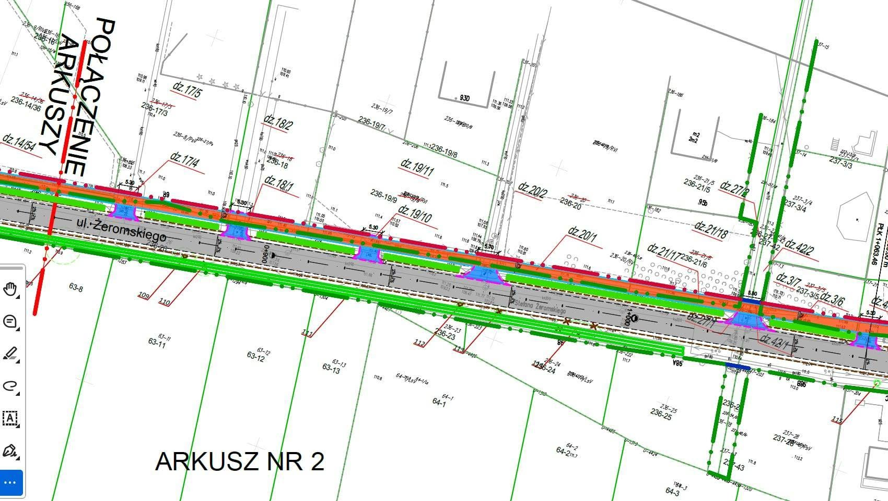
Rysunek 1 – plan sytuacyjny
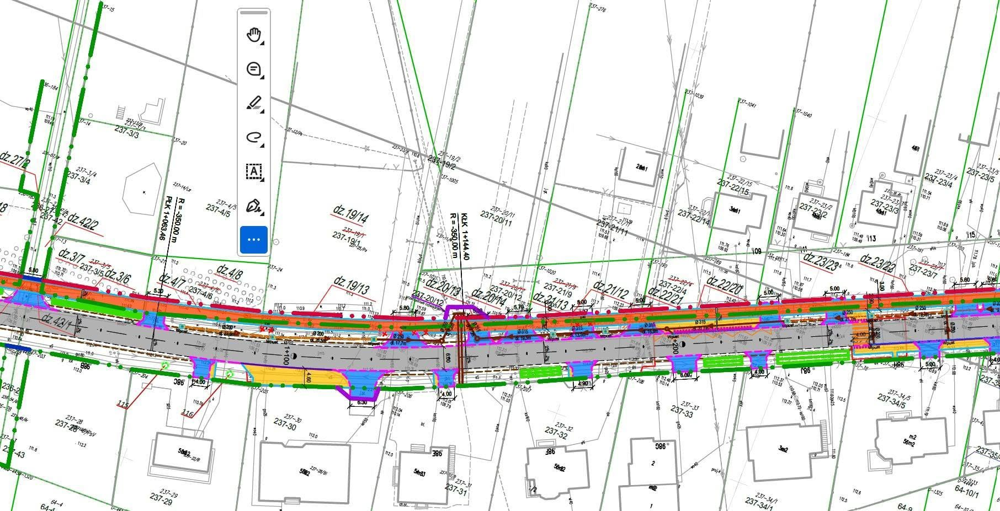
Rysunek 2 – plan sytuacyjny
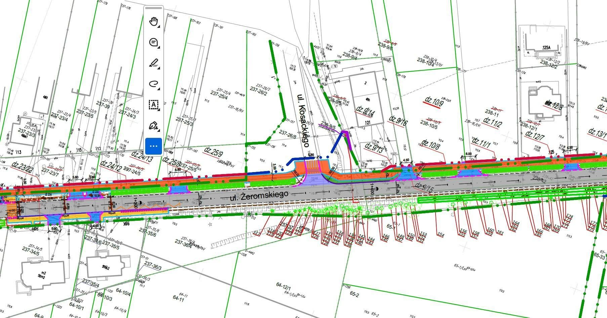
Rysunek 3 – plan sytuacyjny
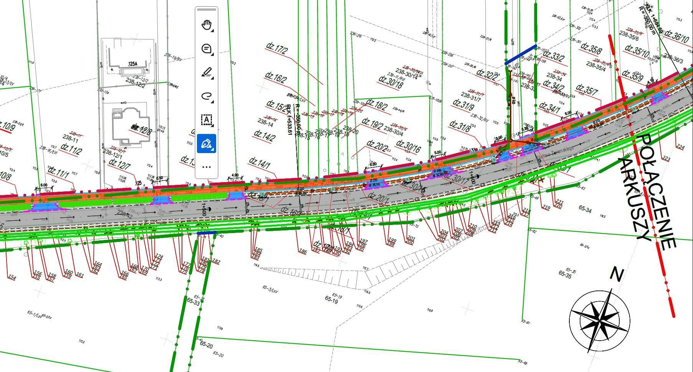
Rysunek 4 – plan sytuacyjnyLegenda
Zauważyliście coś interesującego? Zostawcie komentarz pod postem!
Czwarta i ostatnia część projektu drogowego obejmuje odcinek Żeromskiego od numeru 207 do numeru 237. Poniżej znajdziecie szczegółowy plan zmian w tej części ulicy.
Zmiany w tym segmencie
Parking wzdłuż kościoła zostanie powiększony do 5 m (obecnie ok. 4,7 m)
Nowe oznaczone przejście dla pieszych i rowerzystów na ul. Wyszyńskiego przy wejściu na teren kościoła
Studzienki odwadniające przy przejściach oraz w dalszej części jezdni
W kierunku szkoły zostaną usunięte drzewa rosnące w miejscu projektowanej ścieżki
Na wysokości zatoki autobusowej przy szkole ścieżka kontynuuje bieg, przechodząc przez ul. Laskową i poszerzając się do 4,3 m, po czym przenosi się na drugą stronę jezdni
Nowe przejście dla pieszych i rowerzystów pomiędzy ul. Laskową a drogą techniczną przed wiaduktem
Tak jak w poprzednich segmentach
Ciąg pieszo-rowerowy o szerokości 3 m
Ulica Żeromskiego zwężona do 6 m
Przebudowane zjazdy na drogi poprzeczne i posesje (zaznaczone niebieskim wypełnieniem)
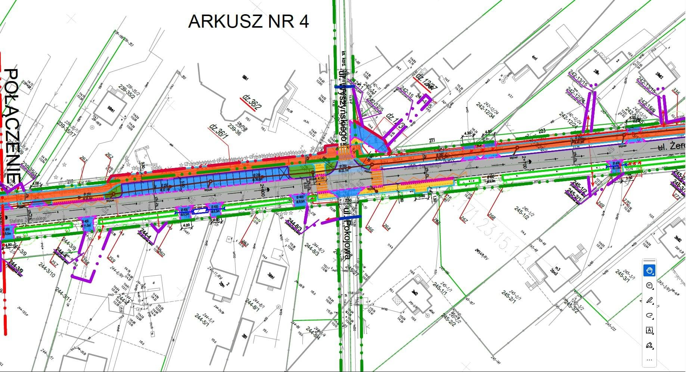
Rysunek 1 – plan sytuacyjny
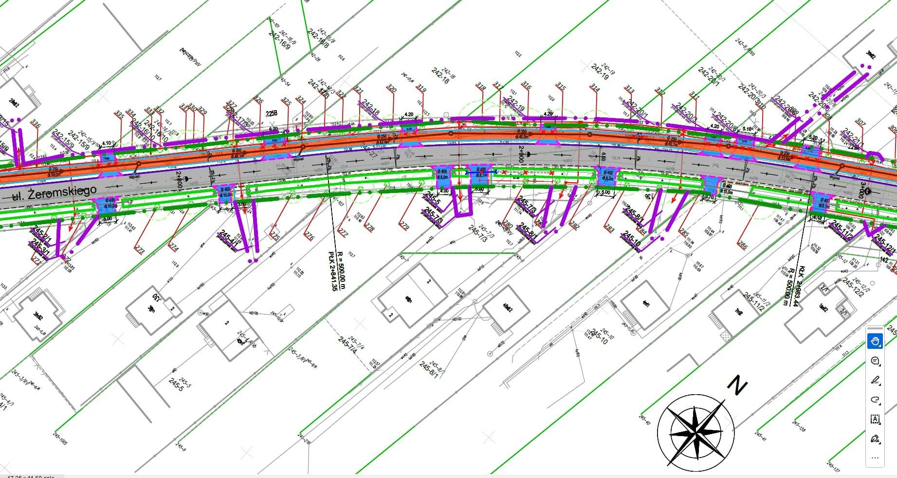
Rysunek 2 – plan sytuacyjny
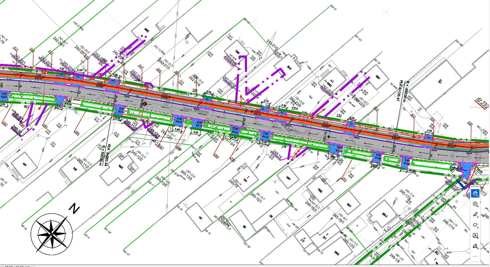
Rysunek 3 – plan sytuacyjny
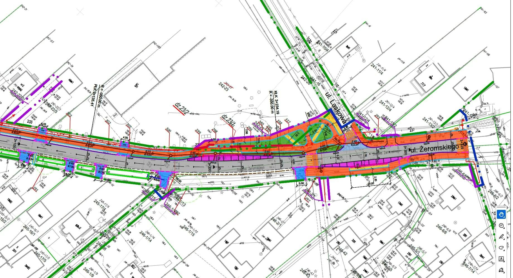
Rysunek 4 – plan sytuacyjnyLegenda
Jakie są Wasze przemyślenia? Zostawcie komentarz pod postem!